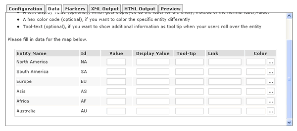

FusionMaps XT comes with a Visual Map Builder, which helps you visually configure map properties and provide data to it without getting into any form of scripting or programming. Thus, even if you're a non-technical user but want to create data-driven maps for your websites, you can easily do so.
Getting back to our previous example, we'll now use the Visual Map Builder to create a World Population Map. Our motive is to display the following data visually on a map.
Population in Millions
| Continent | Population (in Millions) |
| North America | 515 |
| South America | 373 |
| Asia | 3875 |
| Europe | 727 |
| Africa | 885 |
| Australia | 32 |
Though it will not serve a great scientific purpose to show this data on a map (instead of a table), it will serve our purpose of a demo. As we proceed, you'll later see how maps can make data interpretation way easier than simple data tables.
Now, before you launch the magical interface to create the maps, you first need to assemble a few basic things required to build the map.
To create the map using Visual Map Builder, you need to make sure that you've the following things ready with you:
- The SWF and JavaScript files of the map – For our world map, it's called FCMap_World.swf and FusionCharts.HC.world.js. These are present in the Download Package > Maps folder.
- FusionCharts JavaScript Class - This JavaScript class helps you render maps in your web pages. It comprises of the following files:
- FusionCharts.js
- FusionCharts.HC.js
- FusionCharts.HC.Maps.js and
- jquery.min.js.
Let's create a new folder for this example. We name the folder as HowToUseGUI.
Copy FCMap_World.swf file in this folder along with FusionCharts.js. That completes our initial setup for the map.
Now that the basic elements are in place, it's time to put the GUI into action. So, run FusionMapsGUI.html from Download Package > Tools > GUI folder. You'll get a screen like the one below, asking you to select a map from the drop down list.
If you do not see the drop-down populated with list of maps, you need to make sure that JavaScript is enabled for your browser. The Visual Map Builder relies completely on JavaScript to help you build and configure the maps. Please refer to your browser documentation on how to enable JavaScript.
Now, since we want to build a data-driven World Map, select "World Map" from the drop-down list. That will load the World Map in the GUI, as shown below:
As you can see above, the World Map has loaded in the GUI, along with a lot of tabs that help you configure different aspects of the map.
If the World Map or the tabs do not load, or you get a JavaScript error, you need to make sure that Flash Player permissions have been properly set to enable JavaScript to access the map. To know how to configure the Flash Player Global Security Settings, please read this.
Let's briefly discuss each of the tabs first, before we start feeding data for the map. We start with Configuration Tab.
As you can see above, you can configure a lot of map properties using the options given here.
However, do note that this is the not the complete list of configurable attributes. FusionMaps XT allows you to configure a lot more properties than what have been given in the GUI. You'll, however, need to change those in the XML data document directly.
In the data tab, you can enter the data, tool tips, links etc. for your map entities. The GUI automatically lists all the entities for the map currently loaded. You can then provide the value, display label, tool tips, links and colors for each entity.
An entity for a map is the smallest item that we're dealing with on the map. For example, in a World Map showing continents, each continent is an entity. In a continent map showing countries, each country is referred to as an entity. Similarly, if a country map is showing states, each state is referred to as an entity.
The Data tab for the World Map looks as under:

The Marker tab lets you define custom markers for your maps. Markers are user defined points on the map that help you pin-point cities, junctions, houses, malls, locations etc. In this tab, you can visually create and customize the markers for the map currently loaded.
Once you're done with configuring the map properties and data, you can just switch to these tabs to automatically generate the XML and HTML code for the map.
The Preview tab lets you preview the updated map, once you've changed any information in any of the other tabs.
Let's now get back to our example and create the world population map. Since we already have the data ready, we just need to fill the same in the Data Tab. So switch to Data tab and fill in the data as shown below:

Also, if you want to change any of the display labels, tool tips, colors etc., you can do so here.
Now, we need to configure the map properties like colors, number suffixes etc. So, switch to configuration tab and enter the details as shown below:
That sets our stage for the World Population Map. To see our efforts fructify, just switch to Preview tab and you'll see that the map has been updated to reflect the one shown below:

Exactly what we wanted, with the least of effort - isn't it? Let's now see how to get the underlying code behind this map so that you can use it in your web pages.
Visual Map Builder automatically generates the XML data for your maps. To fetch the XML data for the map, just switch to XML Output tab. There you'll see four different types of XML data. You just need to copy the data from first text-area (i.e., full XML data document for the map).
Copy this data, paste it in a text file and save it as Data.xml in our HowToUseGUI folder.
If you're hand coding the XML for your map, you can use the XML data generated in other text fields in this tab.
The GUI also automatically creates the HTML code for the map. To get the same, switch to HTML Output tab and copy-paste the HTML code into a file, say Map.html in the same folder.
That completes the entire process of our World Population Map creation. When you now run the HTML page, you'll see the map inside it.